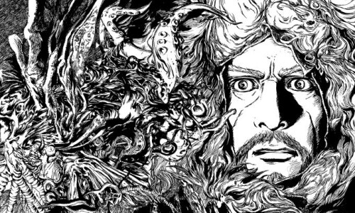

クトゥルフ神話とは
ホーム
クトゥルフ神話とは
登場する神格・生物
クトゥルフ神話TRPG
クトゥルフの呼び声（Call of Cthulhu）
アメリカのゲーム会社であるケイオシアム社が1981年に製作したテーブルトークRPG（TRPG）。
キーパー（The Keeper of Arcane Lore：神秘の護り手）と呼ばれる役割の人がゲームの進行をし、それ以外の人は探索者（Investigator）と呼ばれるプレイヤーキャラクターを操り、クトゥルフ神話の世界観を体験していく。

正気と狂気
このゲームの醍醐味。探索者たちには「正気度ポイント」が各々設定されており、何らかの怪異や超常的な存在に遭遇する度に正気度ロールを行い、成功・失敗に応じてそれぞれに見合った正気度ポイントを減少させる。一度に多く減らしたり、一定の値以上減らしたりすると発狂する。また、正気度ポイントは基本的に減る一方なので、探索者を長く使っているほど、発狂しやすくなる。
サプリメント
追加ルールを記したもの。元のルールブックに載っていない時代・地域の舞台について、その時代・地域のキャラクターデータや風俗や文化、物品の価格などが掲載されているものがほとんど。（例：ローマ時代、中世ヨーロッパ、戦国時代日本、革命期フランス、西部劇時代、ヴィクトリア朝イギリス、etc）
また、より多くの神格や生物が掲載されているものもあったりする。